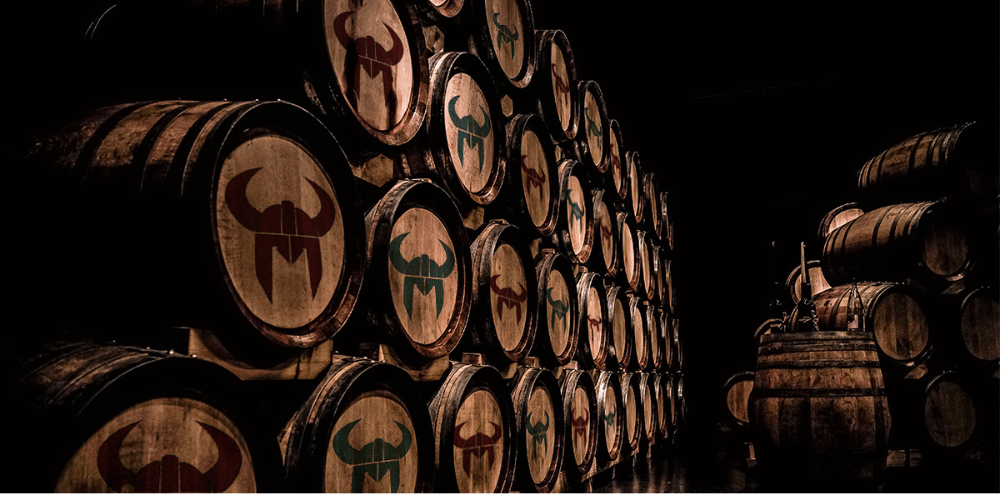

– Njor BrewMaster –

HomeBrewing &
bartenders Guide
Njör is a company that takes pride in creating masterful products. Every detail from the milling of grains to the unique and thoughtful recipes– each step in the brewing process is carried out by people who take pride in their work and genuinely enjoy crafting a tasty brew.
Njör started out as a basement brewery, just a bunch of friends that would get together and make beer. That’s, why we have compiled recipes and useful tools to aid you in your home brewing adventures. Cheers!